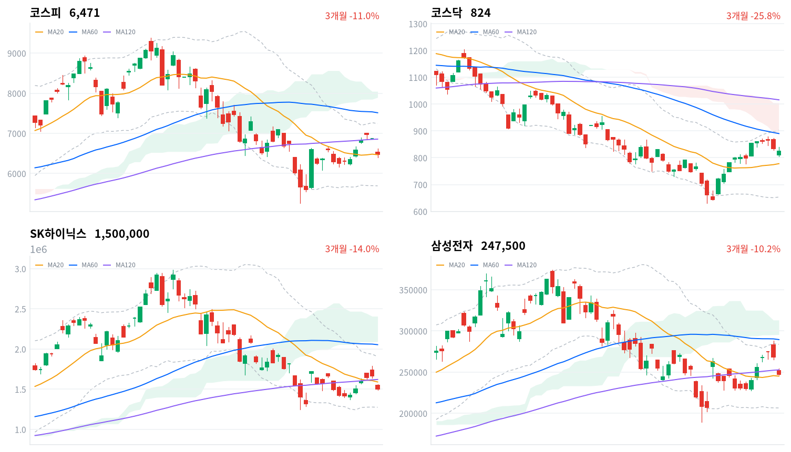
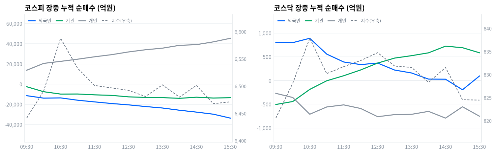

코스닥은 -1.17% 824.46으로 상대적으로 선방하며 코스피 대형 반도체주 중심의 국지적 조정 성격을 드러냈다.
코스피가 전일 대비 398.66포인트(-5.80%) 급락해 6471.17에 마감했다. 장중 낙폭이 커지며 올해 들어 48번째 매도 사이드카(프로그램 매도 일시 정지)가 발동됐고, 코스닥은 상대적으로 선방해 -1.17% 하락한 824.46으로 장을 마쳤다.
급락의 진원은 국내 재료가 아니라 미국발 충격이다 — 미국 30년물 국채금리가 19년 만에 최고 수준까지 치솟으며 뉴욕증시 기술주가 재차 조정을 받았고, 이 여파가 이날 아시아 증시 전반에 번졌다. 여기에 최근 지수 상승을 이끈 SK하이닉스·삼성전자 등 반도체 대형주에 대한 차익실현 매물이 겹쳤고, 호르무즈 해협 인근 선박 피격 소식으로 브렌트유가 배럴당 91달러까지 오르며 인플레이션·금리 재상승 우려까지 가세했다.
정합성·괴리수급은 가격 움직임과 정확히 같은 방향을 가리킨다. 외국인이 코스피에서 3조4884억원(당일 잠정치), 기관이 1조3232억원을 순매도했고 개인만 홀로 4조6356억원을 순매수하며 낙폭을 방어했다.
프로그램 매매에서도 비차익 순매도가 3조3721억원으로 총 순매도 3조5626억원의 95%를 차지해, 이번 매도가 차익거래보다 방향성 있는 기관·외국인 바스켓 매물에서 비롯됐음을 뒷받침한다. 반면 코스닥은 개인이 소폭(717억원) 순매도한 대신 외국인·기관이 각각 147억원, 499억원 순매수에 나서며 지수 방어에 기여했다 — 같은 날 두 시장의 수급 방향이 정반대로 갈렸고, 매도 압력이 반도체 대형주가 몰린 코스피 대형주에 집중됐을 뿐 중소형주 전반으로는 번지지 않았다는 뜻이다.
기술적으로도 코스피는 20일 이동평균 6467.16pt 바로 위(+0.06%)에서 겨우 버텼지만, 일목균형표 구름은 8045.21~7894.67pt로 현재가보다 훨씬 위에 있어 추세 전환을 논하기엔 이르다.
다음 촉매·확인 트리거다음 확인 지점은 세 갈래다. 코스피는 일목균형표 기준선 6395.92pt를 지켜내는지가 1차 관문이고, 이 선이 무너지면 최근 스윙 저점 5262.77pt까지 하방이 열려 있다.
대외적으로는 8월 27일 한국은행 금융통화위원회에서 추가 인상 여부가 원화 자금 흐름과 외국인 수급의 방향을 가를 변수이고, 오늘 국고채 3년물(-4.9bp)·10년물(-4.5bp) 금리가 미국 금리 급등과 반대 방향으로 하락한 이 괴리가 내일도 이어지는지 지켜볼 필요가 있다. 반도체 업황 지원을 위한 특별법 등 정책 재료는 이어지고 있지만 오늘 장에서는 가격에 전혀 반영되지 않았다 — 차익실현 매물이 소화되고 미국 금리가 진정돼야 반등 재료로 다시 부각될 수 있다.
| 지수 | 종가 | 등락률 | 시가 | 고가 | 저가 | 전일 종가 |
|---|---|---|---|---|---|---|
| 코스피 | 6,471.17 | -5.80% | 6,528.77 | 6,614.39 | 6,400.81 | 6,869.83 |
| 코스닥 | 824.46 | -1.17% | 810.08 | 840.50 | 804.02 | 834.20 |
코스피는 6528.77로 출발한 뒤 오전 초반 6441.26(09:30)까지 밀렸다가 낙폭을 키우며 장중 저가 6400.81까지 내려섰다 — 이 구간에서 올해 48번째 매도 사이드카가 발동됐다. 이후 반발 매수가 유입되며 30분봉 기준 10:30에 6587.74까지 반등했으나 오전 상승분을 오래 지키지 못했고, 낮 12시대 6490~6500pt대에서 등락하다 13시대 6481.0까지 재차 밀렸다. 오후에도 6470~6500pt 박스권을 벗어나지 못한 채 15:00 6467.72를 찍고 15:30 6471.17로 마감했다.
코스닥은 810.08로 출발해 장 초반 저가 804.02를 찍은 뒤 꾸준히 오르며 30분봉 기준 10:30에 837.85(당일 고가 840.50에 근접)까지 올랐다. 정오 이후로는 830~835pt 박스권에서 등락하다 오후 들어 서서히 밀리기 시작해 14:00 828.30, 15:00 824.54를 거쳐 824.46으로 마감했다 — 코스피와 달리 오전 반등폭을 상당 부분 지켜낸 채 장을 마친 점이 -1.17%라는 상대적으로 얕은 낙폭으로 이어졌다.
이날 낙폭의 촉발 요인은 미국 30년물 국채금리의 19년 만의 최고치 경신과 이에 따른 뉴욕 기술주 조정, SK하이닉스·삼성전자 등 반도체 대형주 차익실현, 호르무즈 해협 유조선 피격에 따른 브렌트유 급등(배럴당 91달러) 세 갈래가 겹친 결과로 보도된다(뉴스핌·헤럴드경제·전자신문·파이낸셜뉴스).

코스피·코스닥·SK하이닉스·삼성전자 3개월 일봉에 이동평균(20·60·120)·볼린저밴드·일목균형표 구름대를 오버레이했다. 상승 캔들은 녹색, 하락 캔들은 적색으로 표시된다.
코스피(6,471.17pt)는 20일 이동평균 6,467.16pt와 거의 겹친 채(괴리율 +0.06%) 마감했지만, 60일선(7,512.81pt, 괴리율 -13.86%)·120일선(6,855.35pt, 괴리율 -5.60%)은 모두 아래에 두고 있어 이동평균 배열이 '혼조'로 분류된다. 볼린저밴드 %b는 0.503으로 중심선 부근에 위치해 있고, 일목균형표 상 전환선(6,584.79pt)과 기준선(6,395.92pt) 사이에 끼여 있으며 구름대(8,045.21~7,894.67pt)는 현재가보다 훨씬 위에 있어 저항으로 작동하기엔 아직 멀다.
상승 트리거는 전환선 6,584.79pt 회복이며, 이를 넘어서면 20일 스윙 고점 7,166.00pt가 다음 목표가 된다. 하락 트리거는 기준선 6,395.92pt 이탈이고, 이 경우 60일 스윙 저점이자 20일 저점과 같은 5,262.77pt가 최후 지지선이 된다.
코스닥(824.46pt)은 20일선(777.85pt, 괴리율 +5.99%) 위에 있지만 60일선(890.08pt, -7.37%)·120일선(1,015.96pt, -18.85%) 아래에 있는 전형적인 '역배열' 구조다. 다만 볼린저밴드 %b가 0.687로 밴드 상단권에 위치하고 일목균형표 후행스팬이 26일 전 가격 위에 있어(선행 지표상 일부 반등 신호) 단기적으로는 저가 매수세가 유입된 흔적이 엿보인다.
상승 트리거는 전환선 827.94pt 돌파이며, 이를 넘으면 20일 스윙 고점 879.29pt, 이어 구름 하단 894.42pt가 저항 목표로 남는다. 하락 트리거는 20일선 777.85pt 이탈이고, 이후 기준선 755.14pt를 거쳐 20일·60일 공통 스윙 저점 630.99pt가 최후 지지선이다.
SK하이닉스(1,500,000원)는 20일선(1,589,650원, 괴리율 -5.64%)·기준선(1,708,500원)을 모두 밑돌며 오늘 조정의 진앙답게 약세 배열을 보였다. 전환선(1,582,500원)이 20일선보다 낮게 위치해 있어, 상승 트리거는 전환선 1,582,500원 회복 → 20일선 1,589,650원 → 기준선 1,708,500원 순으로 단계적 저항이 걸려 있고, 최종적으로는 20일 스윙 고점 2,006,000원이 목표가 된다. 하락 트리거는 20일·60일 공통 스윙 저점인 1,246,000원 이탈이며, 이 아래로는 참고할 기술적 지지선이 없다.
삼성전자(247,500원)는 20일선(245,125원, 괴리율 +0.97%) 바로 위에서 지지받고 있으나 60일선(289,508.33원, -14.51%)·120일선(252,732.92원, -2.07%)은 아래에 두고 있어 코스피와 마찬가지로 '혼조' 배열이다. 상승 트리거는 120일선 252,732.92원 회복이며, 이어 전환선 257,750.00원을 넘으면 60일선 289,508.33원과 20일 스윙 고점 288,000원 부근이 다음 목표권이 된다.
하락 트리거는 기준선 240,850.00원 이탈이고, 이 경우 20일·60일 공통 스윙 저점 189,200원이 최후 지지선이다.
위 레벨은 20·60·120일 이동평균, 볼린저밴드, 일목균형표, 스윙 고저를 기계적으로 계산한 값이며 투자 권유가 아니다.
| 주체 | 순매수(억원) |
|---|---|
| 개인 | +46,356 |
| 외국인 | -34,884 |
| 기관 | -13,232 |
| 주체 | 순매수(억원) |
|---|---|
| 개인 | -717 |
| 외국인 | +147 |
| 기관 | +499 |
코스피 수급은 오늘 가격 급락의 원인을 그대로 설명한다. 외국인이 3조4884억원, 기관이 1조3232억원을 순매도(당일 잠정치)했고 이를 개인이 홀로 4조6356억원 순매수로 받아냈다 — 두 기관투자자 그룹이 동반 매도에 나선 날 지수가 5.80% 급락한 것은 방향성이 완전히 일치한다.
코스닥은 정반대다. 개인이 소폭(717억원) 순매도한 반면 외국인·기관은 각각 147억원, 499억원을 순매수(당일 잠정치)해 지수를 -1.17%라는 상대적으로 얕은 낙폭에 붙잡아 뒀다.
같은 날 두 시장에서 외국인·기관의 방향이 엇갈렸다는 것은 이번 매도가 코스피 대형 반도체주에 집중된 국지적 차익실현이었을 뿐, 중소형주 전반의 투매로 번지지는 않았음을 시사한다.

누적 순매수(억원), 정규장 09:30~15:30 30분 앵커 기준. 지수는 우측 축.
| 시각 | 코스피(억원) | 코스닥(억원) | ||||
|---|---|---|---|---|---|---|
| 개인 | 외국인 | 기관 | 개인 | 외국인 | 기관 | |
| 09:30 | 13,733 | -11,461 | -2,594 | -271 | 803 | -506 |
| 10:00 | 20,508 | -13,893 | -7,529 | -359 | 798 | -443 |
| 10:30 | 22,515 | -13,667 | -9,883 | -711 | 889 | -188 |
| 11:00 | 24,655 | -15,948 | -9,813 | -558 | 556 | -6 |
| 11:30 | 27,043 | -17,615 | -10,629 | -514 | 390 | 100 |
| 12:00 | 29,128 | -19,204 | -11,161 | -590 | 335 | 222 |
| 12:30 | 31,836 | -20,550 | -12,624 | -763 | 367 | 367 |
| 13:00 | 34,013 | -22,201 | -13,205 | -719 | 220 | 472 |
| 13:30 | 35,572 | -23,665 | -13,390 | -713 | 158 | 523 |
| 14:00 | 38,373 | -25,857 | -14,093 | -651 | 29 | 583 |
| 14:30 | 39,064 | -27,717 | -12,977 | -793 | 27 | 723 |
| 15:00 | 41,825 | -29,796 | -13,799 | -554 | -196 | 691 |
| 15:30 | 45,346 | -33,676 | -13,443 | -753 | 94 | 584 |
코스피 외국인의 누적 순매도선은 09:30(-11,461억원)부터 15:30(-33,676억원)까지 방향 전환 없이 하루 종일 한 방향으로 깊어졌다. 같은 시간 지수는 09:30 저점(6,441.26) 이후 10:30 반등(6,587.74)을 거쳐 오후 내내 밀렸는데, 오전 반등 구간에서도 외국인 매도는 이미 꾸준히 깊어지고 있었다는 점에서 그 반등은 외국인 수급이 아니라 개인 매수·저가 반발에 기댄 되돌림에 가까웠다. 오후 들어 지수가 재차 밀리는 흐름은 외국인 매도가 마감 직전까지 가속(장중 저점 -33,676억원, 15:21)된 것과 방향이 일치한다.
기관 매도는 금융투자 창구에 집중됐다. 코스피 기관의 정규장 마지막 관측치(-13,443억원) 중 금융투자 단독 순매도가 -13,488억원으로 기관 전체보다도 컸고, 연기금등은 오히려 +918억원 순매수로 대응했다 — 프로그램·선물 연계 성격의 매물이 기관 매도를 주도했고 정책성 장기 자금인 연기금은 소폭이나마 역행 매수에 나선 셈이다.
이는 뒤에 나오는 비차익 순매도 3조3721억원이 총 순매도의 95%를 차지한 프로그램 매매 결과와 결이 같다. 코스닥은 반대로 기관 순매수(+584억원) 대부분이 금융투자(+583억원)에서 나왔고, 이 창구는 11:16 순매도에서 순매수로 전환한 뒤 14:34 +750억원까지 늘려 지수 방어에 기여했다.
정규장 마지막 관측치와 확정치를 비교하면 코스피는 개인·외국인 모두 확정치에서 규모가 더 커졌다(개인 45,346억원→46,356억원, 외국인 -33,676억원→-34,884억원) 반면 기관 순매도는 소폭 줄었다(-13,443억원→-13,232억원). 코스닥은 개인 순매도가 줄고(-753억원→-717억원) 외국인 순매수는 늘었으며(94억원→147억원) 기관 순매수는 소폭 줄었다(584억원→499억원).
내일 확인할 지점은 코스피 외국인 매도가 장 후반의 가속 흐름을 다음 날에도 이어가는지, 그리고 코스닥에서 장 막판 순매수로 돌아선 외국인(15:16 전환)이 다음 날에도 이어지는지 여부다.
| 시장 | 차익 순매수(억원) | 비차익 순매수(억원) | 전체 순매수(억원) |
|---|---|---|---|
| 코스피 | -1,905 | -33,721 | -35,626 |
| 코스닥 | +349 | -67 | +282 |
코스피 프로그램 매매는 총 순매도 3조5626억원 중 비차익이 3조3721억원(95%)을 차지해 선물 연계 차익거래(-1,905억원)보다 방향성 있는 기관·외국인 바스켓 매도가 압도적으로 컸다. 이는 외국인 순매도 3조4884억원과 방향·규모가 거의 일치해, 오늘 낙폭이 프로그램을 통한 대량 바스켓 매도에서 비롯됐다는 해석에 무게를 싣는다. 코스닥은 차익 순매수(+349억원)가 비차익 순매도(-67억원)를 웃돌며 전체로는 소폭 순매수(+282억원)를 기록해, 코스피와 달리 방향성 매물이 크지 않았다는 점이 지수 방어와 정합적이다.
| 순위 | 종목/ETF | 구분 | 거래대금 | 비고 |
|---|---|---|---|---|
| 1 | SK하이닉스 | 개별주 | 6.38조원 | - |
| 2 | 삼성전자 | 개별주 | 5.66조원 | - |
| 3 | 반도체 테마 ETF | 테마·롱 | 2.31조원 | 13종 합산 |
| 4 | 삼성전자우 | 개별주 | 0.52조원 | - |
| 5 | SK하이닉스 레버리지 | 레버리지·롱 | 0.45조원 | 2종 합산 |
| 6 | SK이터닉스 | 개별주 | 0.23조원 | - |
| 7 | SK하이닉스 인버스 | 인버스·숏 | 0.17조원 | - |
| 8 | KODEX 200타겟위클리커버드콜 | ETF·롱 | 0.17조원 | - |
| 9 | 전력·에너지 테마 ETF | 테마·롱 | 0.17조원 | 2종 합산 |
| 10 | 삼성전자 레버리지 | 레버리지·롱 | 0.14조원 | 2종 합산 |
단위 백만원 원본을 조 단위로 환산. 같은 기초자산 ETF는 방향별로, 같은 테마 섹터 ETF는 테마별로 묶었으며 코스피200·코스닥150 추종 지수 ETF 및 그 레버리지·인버스, 해외 ETF는 제외했다.
반도체 관련 거래대금은 개별주(SK하이닉스 6.38조원 + 삼성전자 5.66조원 + 삼성전자우 0.52조원 = 12.56조원)와 반도체 테마 ETF 13종 합산(2.31조원)을 더하면 14.87조원에 달해, 거래대금 상위 10종목 총합의 대부분을 반도체가 차지했다. 개인 투자자는 산업 전체를 바스켓으로 사기보다 SK하이닉스·삼성전자를 직접 매매하는 쪽을 압도적으로 선호했다는 뜻이다.
SK하이닉스 레버리지(0.45조원)는 인버스(0.17조원)의 약 2.6배 거래대금을 기록해, 지수가 급락한 날에도 개인 투자자의 방향성 베팅이 인버스보다 레버리지 쪽에 더 쏠렸다. 거래대금만으로 매수·매도 방향을 단정할 수는 없지만, 코스피 개인이 4조6356억원을 순매수하며 낙폭을 방어한 흐름과 겹쳐 보면 레버리지 회전율 증가는 저가 매수·물타기 성격에 가까워 보인다. 전력·에너지 테마 ETF(0.17조원, 2종 합산)도 거래대금 상위에 남아 AI 데이터센터發 전력 수요 테마 자금이 급락장 속에서도 유지됐음을 보여준다.
1일 기준 유일한 플러스권 대형 섹터인 건설(+1.62%, kr_sector.html 기준)은 kr_industry.json 세부 업종 분류에서도 +1.59%로 상승 종목 78개 중 25개(등락률 32.1%)가 오르며 'leading' 판정을 받아 폭넓은 상승으로 확인된다. 반면 오늘 가장 크게 오른 개별 세부 업종인 레저용장비와제품(+3.09%)은 상승 종목이 13개 중 2개(15.4%)에 그쳐 'note: 좁은 상승·개별종목'으로 분류됐다 — 상승률만 보고 주도 섹터로 부르기 어렵다.
kr_industry.json에는 별도의 반도체 업종 항목이 없어, 오늘 가장 크게 하락한 반도체(-5.81%, 1D)의 낙폭 배경은 위 거래대금·수급 데이터로 대신 확인해야 한다.
SK하이닉스와 삼성전자는 거래대금 1·2위(각각 6.38조원, 5.66조원)를 기록하며 오늘 조정의 진앙 역할을 했다. 최근 지수 상승을 주도했던 두 종목에 대규모 차익실현 매물이 쏟아졌고, 일본에서도 SK하이닉스·키옥시아·소프트뱅크 등 반도체·AI 관련주가 7~12%대 급락하며 동조화한 것으로 전자신문 등이 보도했다. 반도체 테마 ETF(2.31조원, 13종 합산)도 거래대금 상위에 올라 개별주뿐 아니라 바스켓 자금까지 반도체 방향 전환에 반응했음을 보여준다.
SK하이닉스 레버리지(0.45조원)와 인버스(0.17조원)가 나란히 거래대금 상위에 오른 것은 변동성 장세에서 개인 투자자의 매매 회전율이 급증했음을 방증한다. 업종별로는 건설이 +1.59~1.62%로 코스피 급락장 속에서도 유일하게 폭넓은 상승세를 보인 반면, 조선(-2.54%~-3.00%)·자동차부품(-2.34%)·전기장비(-2.86%)·증권(-4.53%)은 낙폭 상위에 이름을 올렸다. 은행(-1.31%~-1.44%)도 하락했는데, 이는 뒤에 다룰 상법 개정(자사주 소각 의무화) 수혜 논리가 오늘 시장 전체의 낙폭에 묻혀 가격에 드러나지 않았음을 보여주는 사례다.
원/달러 환율은 이날 상승 압력을 받으며 변동성이 확대됐다고 보도되나(MBC 등), kr/data 원본에 정확한 스팟 레벨이 없어 이 리포트에서는 구체적인 환율 수치를 제시하지 않는다.
| 지표 | 금리 | 전일比 | 기준일 |
|---|---|---|---|
| 국고채 3년 | 3.798% | -4.9bp | 2026-08-19 |
| 국고채 10년 | 4.337% | -4.5bp | 2026-08-19 |
| CD 91일 | 2.940% | +1.0bp | 2026-08-19 |
| 회사채 AA- 3년 | 4.497% | -4.5bp | 2026-08-19 |
| 한국은행 기준금리 | 2.750% | +25.0bp | 2026-07 |
한국은행 기준금리는 7월 금융통화위원회 결정치(2026-07 기준, 전월 2026-06 대비 +25bp)이며 나머지 시장금리는 모두 보고서 당일(2026-08-19) 기준이다.
국고채 3년물(3.798%)과 10년물(4.337%)의 스프레드는 53.9bp로 정상 우상향 커브를 유지했다. 오늘 하루로 보면 3년물이 10년물보다 더 크게 내려(-4.9bp vs -4.5bp) 스프레드가 미세하게 벌어진 완만한 스티프닝으로, 미국 30년물 국채금리가 19년 만에 최고치를 찍은 것과는 정반대 방향이다 — 코스피가 미국발 금리 충격으로 급락한 날 국내 국채 금리는 오히려 하락해, 주식시장에서 빠진 자금 일부가 안전자산인 국내 채권으로 흘러갔을 가능성을 시사하지만 채권 수급 데이터가 없어 단정하기는 어렵다.
회사채 AA- 3년물(4.497%)과 국고채 3년물의 스프레드는 69.9bp로 전일 대비 거의 변하지 않아(-4.5bp vs -4.9bp), 주식시장 급락에도 신용시장은 별다른 동요를 보이지 않았다. 국고채 3년물(3.798%)은 기준금리(2.750%) 대비 104.8bp 높게 형성돼 있어, 8월 27일 금통위를 앞두고 시장이 추가 인상 내지 당분간 인하 없는 국면을 이미 어느 정도 선반영하고 있다고 볼 수 있다.
2026년 2월 25일 국회 본회의를 통과한 상법 3종 세트 개정안에 따라 기업은 취득한 자사주를 원칙적으로 1년 이내(기존 보유분은 1년 6개월 이내) 소각해야 한다. 자사주는 의결권·신주인수권·이익배당 등 주주 권리가 전면 제한되며 예외적 활용에는 주주총회 승인이 필요하다(법률신문·BKL·김장법률사무소 보도).
전달 경로는 두 갈래다. 자사주를 경영권 방어·지배력 확대 수단으로 활용해온 관행이 축소되면서 유통주식수 감소(소각)에 따른 EPS·ROE 개선 기대가 밸류에이션 멀티플을 밀어 올리는 경로이고, 동시에 자사주 매입 여력이 큰 기업의 양도세 부담 증가는 반대 방향으로 작용한다. 자사주 보유 비중이 높고 주주환원 여력이 있는 금융지주·수출 대형주는 구조적 수혜 프레임에 해당하지만, 오늘 은행 업종은 -1.31%~-1.44% 하락해 이 재료가 오늘 가격에는 반영되지 않았다 — 급락장 전체 낙폭에 개별 재료가 묻힌 전형적인 사례로, '아직 반영 안 됨'으로 판정한다.
다음 확인 지점은 금융위원회의 후속 시행령·공시 강화(자기주식 보유·처분계획 공시 확대) 조치이며, 구체적 발표 일정은 미확정이다.
직전 7월 회의에서 한국은행은 기준금리를 2.50%에서 2.75%로 25bp 인상했다(kr_econ.json 기준금리 2.75%, 전월 2.50%와 일치). 다음 금통위는 8월 27일로 예정돼 있다(토스뱅크 등 보도).
전달 경로는 금리→원화 자금 흐름→외국인 채권·주식 수급이다. 미국 국채금리가 급등하는 국면에서 한은이 추가 인상과 동결 중 어느 쪽을 택하느냐가 한미 금리차와 원화 변동성, 나아가 외국인 자금 유출입 강도를 좌우한다. 오늘 국고채 3년물·10년물 금리는 각각 -4.9bp, -4.5bp로 내려 미국발 금리 급등 흐름과 괴리를 보였는데, 이는 코스피 급락에 따른 안전자산 선호가 국내 채권시장에 일부 반영됐을 가능성과, 아직 금통위 결과가 나오지 않아 관망 심리가 우세했을 가능성을 함께 시사한다.
추가 인상이 현실화하면 은행·보험 등 금리 민감 금융주는 마진 개선 기대를, 고밸류 성장주·부동산·건설은 할인율 부담 확대를 각각 받게 된다. 확인 트리거는 8월 27일 금통위 결과 발표와 기자간담회에서의 추가 인상 예고 여부다.
금융투자소득세(금투세) 폐지는 정부가 추진했으나 아직 국회 본회의 통과가 이뤄지지 않았다. 배당소득 분리과세는 2026~2028년 3년 한시로 확정돼 2026년 귀속 배당분부터 적용되며(종합과세 최고세율 49.5%→분리과세 시 38.5%), 대주주 양도세제 개편은 여전히 국회 논의 중이다(나무위키·KB금융 세무 자료 보도).
전달 경로는 세율 변경이 직접 세후 기대수익률을 바꾸는 이익 채널이다. 배당소득 분리과세 확정은 고배당 종목의 세후 기대수익률을 높여 배당주 수요 기반을 넓히는 반면, 금투세 폐지 지연은 대주주 요건 인근 큰손 투자자의 연말 절세 매물 유인을 남겨 둔다. 고배당 금융지주·통신·정유 업종이 구조적 수혜 프레임에 해당하지만, 오늘은 급락장에 가려 고배당주만의 별도 강세를 데이터로 확인하기 어렵다 — '아직 반영 안 됨'.
확인 트리거는 9월 개회하는 정기국회의 세법 개정 논의 일정이며, 구체적 처리 시점은 미확정이다.
2026년 1월 29일 국회를 통과하고 8월 11일 시행된 반도체산업 경쟁력강화 특별법에 따라 클러스터 기반시설 비용을 국가·지자체가 최대 100%까지 지원하며, 2027년에는 약 2조원 규모의 반도체 특별회계 신설이 계획돼 있다(파이낸셜뉴스·아주경제 보도).
전달 경로는 인프라 비용 부담 완화를 통한 반도체 대형 설비투자 기업의 이익 개선 기대다. 하지만 오늘 시장에서는 이 재료가 전혀 힘을 쓰지 못했다 — 오히려 반도체 대형주(SK하이닉스·삼성전자)가 거래대금 1·2위에 오르며 조정의 진앙이 됐고, 섹터 기준으로도 반도체(1D -5.81%)가 코스피 하락을 이끈 최대 낙폭 섹터였다. 정책 지원 재료와 오늘의 가격·수급은 완전히 반대 방향으로, '아직 반영 안 됨'을 넘어 오늘만큼은 매크로·차익실현 압력이 정책 재료를 압도했다고 판정하는 것이 정확하다.
확인 트리거는 정부가 8월 중 예고한 반도체 혁신지원단 신설과 특별회계 예산안의 국회 심의 일정이며, 구체적 날짜는 미확정이다.